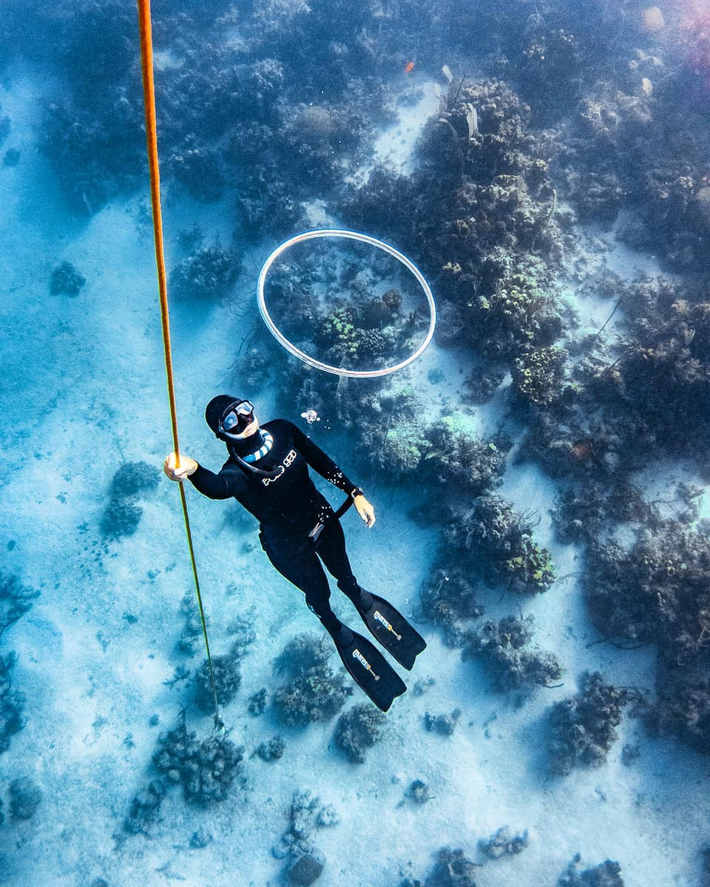

Freediving is the sport and practice of holding your breath (apnea) underwater. People freedive in the ocean, lakes, and swimming pools. Freedivers train to compete, dive for the fun of it, dive to catch fish (spearfishing), or dive to look around (snorkelling). Freediving can be physically challenging, meditative, or a mental battle. Freediving is the most natural and serene way to explore the depths of the oceans with minimal impact.
In competition there are depth, dynamic apnea (maximum distance in the pool), and static apnea (maximum time in the pool) disciplines. NZ athletes are competitive in pretty much every event.
Freediving with a club means you can train regularly and find other divers for trips or competitions. It's a great way to give freediving a try in a safe and friendly environment, and it's cheap too. We do recommend that anyone who freedives (especially in open water) take a course from a qualified instructor.
To join the club, everyone needs to attend an induction (you can attend the induction without joining the club if you just want to give it a go). We hold inductions monthly, 6pm till 8pm on a Monday at Graham Condon swimming pool. You'll need to fill in the form below before attending. We'll get back to you with the date of the next available induction. Inductions are usually $20, but are free for our first few months. If you've got any questions, get in touch.
